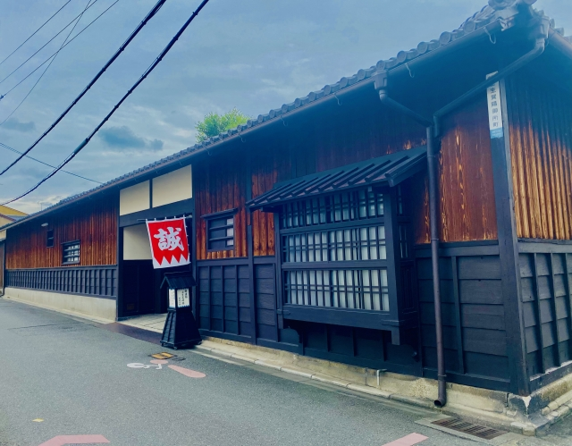
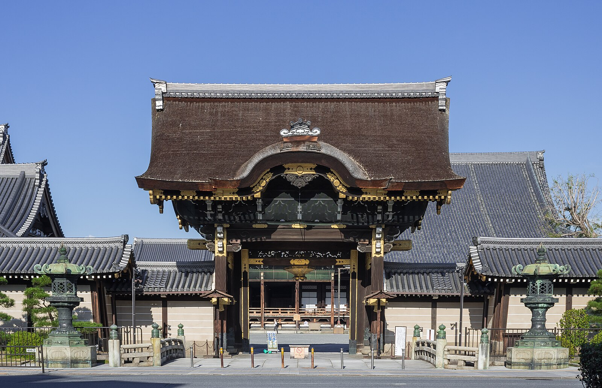
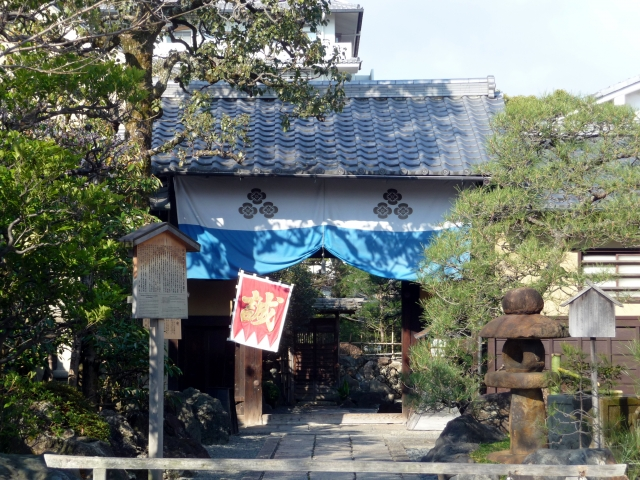
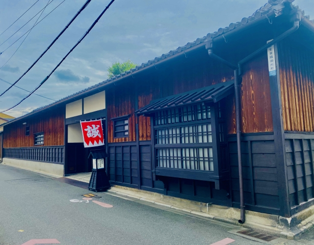
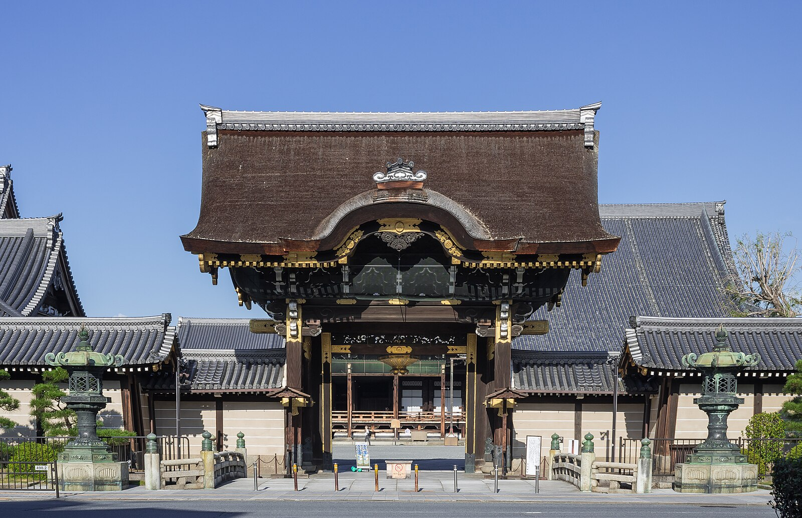
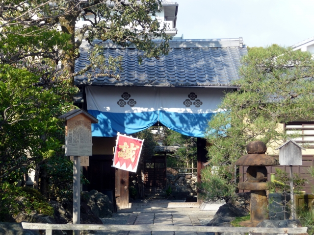
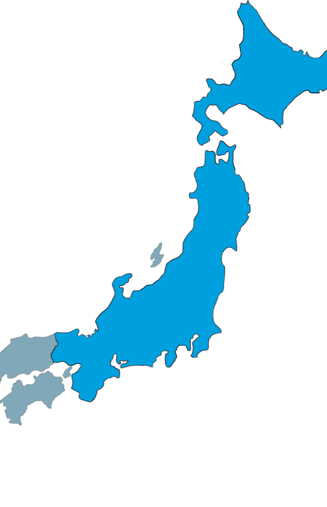
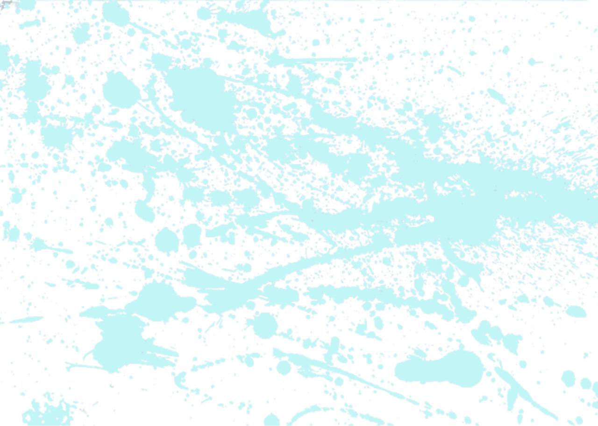
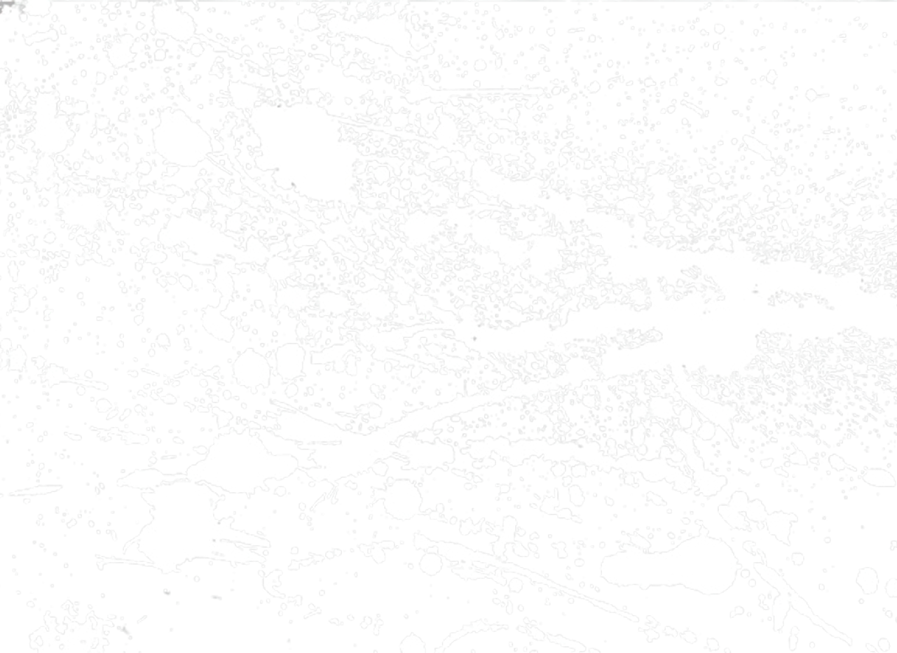

日野宿本陣跡にあった天然理心流剣術道場。
出稽古に来た近藤勇や沖田総司、山南敬助らが訪れるようになり、
日野出身の土方歳三、井上源三郎らを交え新撰組の中核をなすメンバーが集まる
試衛館では、食客として永倉新八や藤堂平助、原田左之助がいた。


 





誠の旗のもと散っていった、
新撰組の軌跡をたどる
01 新撰組とは
江戸時代末期、京都治安維持のために結成された「新撰組」。新撰組は、「尊皇攘夷思想」を持ち、
京都で乱暴狼藉を行なっていた、不逞浪士の取り締まりをするために結成された組織です。
京都で乱暴狼藉を行なっていた、不逞浪士の取り締まりをするために結成された組織です。
02 新撰組の足跡

五稜郭
会津若松城
土方歳三資料館
日野本陣跡
試衛館
甲府城
西本願寺
八木邸


03 新撰組の黎明期ゆかりの地